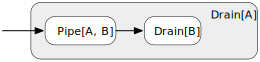
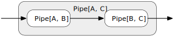

Pipes
A Pipe is a stream graph component with one input port and one output port, i.e. it consumes elements of type A and produces elements of type B.

As with all other stream graph components a pipe can internally consist of just one single stage or a whole graph of stages that together form a structure that, to the outside, looks like a simple stage.
Creating Pipes
Most of the time you’ll create pipes by appending transformations to a freshly created “identity Pipe”, e.g. like this:
def simplePipe: Pipe[Int, String] =
Pipe[Int].filter(_ % 2 == 0).map(_.toString)Like all other streaming components pipes can be named, which is often used in swave itself to “package” several transformations for nicer rendering. For example, here is the essence of swave’s slice transformation:
def slice[A](startIndex: Long, length: Long): Pipe[A, A] =
Pipe[A] drop startIndex take length named "slice"Using Pipes
Pipes can be attached to Spouts with the via operator:
def someInts: Spout[Int] =
Spout.ints(from = 0).via(slice(10, 42))
someInts.drainToList(limit = 100)
.value.get.get shouldEqual (10 to 51)As you can probably guess the result of appending a Pipe[A, B] to a Spout[A] is a Spout[B]:

Pipes can also be prepended to Drains with the to operator:
def intDrain: Drain[Int, Future[String]] =
Pipe[Int].map(_ * 2).to(Drain.mkString(limit = 100, sep = ", "))
Spout.ints(from = 0)
.take(5)
.drainTo(intDrain)
.value.get.get shouldEqual "0, 2, 4, 6, 8"The result of prepending a Pipe[A, B] to a Drain[B] is a Drain[A]:

And, similarly to functions, pipes can be combined with other pipes to form larger compound ones:
def shareOfZeroFigures: Pipe[Int, Double] =
Pipe[Int]
.map(_.toString)
.map { s =>
s.foldLeft(0) {
case (zeroes, '0') => zeroes + 1
case (zeroes, _) => zeroes
} / s.length.toDouble
}
def stringify: Pipe[Double, String] =
Pipe[Double].map("%.2f" format _)
def compound: Pipe[Int, String] =
shareOfZeroFigures via stringify
Spout.ints(from = 98)
.take(5)
.via(compound)
.drainToMkString(limit = 100, sep = ", ")
.value.get.get shouldEqual "0.00, 0.00, 0.67, 0.33, 0.33"The result of combining a Pipe[A, B] and a Pipe[B, C] is a Pipe[A, C]:
